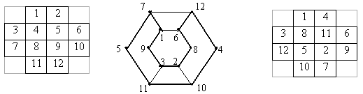

The board has the form of a cross, which is obtained if corner boxes of a square board of 4 x 4 are erased. Is it possible to go around it with the help of the knight chess piece and return to the original cell, having visited all the cells exactly once?
We number the board fields $($figure on the left$)$ and draw the graph $($figure in the centre$)$, where the vertices correspond to the fields, and the edge is drawn if the corresponding fields are on the knight’s way. On the graph, it is easy to construct the required course $($the bold line$)$. In the figure on the right, the fields are numbered in order of the knight’s course.

Yes, it is.
The listed route, of course, is not the only one.